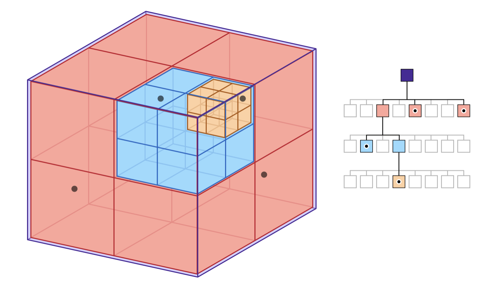

Rendering in napari¶
Status¶
As of napari version 0.4.3 there are two opt-in experimental features
related to rendering. They can be accessed by setting the environment
variables NAPARI_ASYNC=1 or NAPARI_OCTREE=1. See the Guide on Rendering
for specific information about those two features. This document is more of
a general backgrounder on our approach to rendering.
Framerate¶
The most common screen refresh rate is 60Hz, so most graphics applications try to draw at least 60Hz as well. If napari renders at 60Hz then any motion, for example from panning and zooming the camera, will appear smooth. If 60Hz cannot be achieved, however, it’s important that napari render as fast as possible. The user experience degrades rapidly as the framerate gets slower:
Framerate |
Milliseconds |
User Experience |
|---|---|---|
60Hz |
16.7 |
Great |
30Hz |
33.3 |
Good |
20Hz |
50 |
Acceptable |
10Hz |
100 |
Bad |
5Hz |
200 |
Unusable |
The issue is not just aesthetic. Manipulating user interface elements like sliders becomes almost impossible if the framerate is really slow. This creates a deeply frustrating experience for the user. Furthermore, if napari “blocks” for several seconds, the operating system might indicate to the user that the application is hung or has crashed. For example MacOS will show the “spinning wheel of death”. This is clearly not acceptable.
A fast average framerate is important, but it’s also important that napari has as few isolated slow frames as possible. A framerate that jumps around leads to something called jank. For the best user experience we want a framerate that’s fast, but also one that’s consistently fast.
Array-like interface¶
Napari renders data out of an array-like interface. The data can be owned
by any object that supports NumPy’s slicing syntax. One common such
object is a Dask array. The fact that napari can
render out of any array-like data is flexible and powerful, but it means
that simple array accesses can result in the execution of arbitrary code.
For example, an array access might result disk IO or network IO, or even a
complex machine learning computation. This means array accesses can take an
arbitrary long time to complete.
Asynchronous rendering¶
Since we don’t know how long an array access will take, and we never want the GUI thread to block, we cannot access array-like objects in the GUI thread. Instead, napari’s rendering has to be done asynchronously. This means rendering proceeds at full speed drawing only the data which is in memory ready to be drawn, while in the background worker threads load more data into memory to be drawn in the future.
This necessarily means that napari will sometimes have to draw data that’s only partially loaded. For example, napari might have to show a lower resolution version of the data, such that the data appears blurry until the rest of the data has loaded in. There might even be totally blank portions of the screen.
Although showing the user partial data is not ideal, it’s vastly better than letting the GUI thread block and napari hang. If napari stays responsive the user stays in control. The user can sit still and watch the data load in, or they can navigate somewhere else entirely, they are free to choose.
Issues that napari has without asynchronous rendering include #845, #1300, and #1320.
RAM and VRAM¶
There is a two step process to prepare data for rendering. First the data needs to be loaded in RAM, then it needs to be transferred from RAM to VRAM. Some hardware has “unified memory” where there is no actual VRAM, but there is still a change of status when data goes from raw bytes in RAM to a graphics “resource” like a texture or geometry that can be drawn.
The transfer of data from RAM to VRAM must be done in the GUI thread. Worker threads are useful for loading data into RAM in the background, but we cannot load data into VRAM in the background. Therefore to prevent hurting the framerate we need to budget how much time is spent copying data into VRAM, we can only do it for a few milliseconds per frame.

Chunks¶
For paging into both RAM and VRAM it’s a requirement that the data napari renders is broken down into “chunks”. A chunk is a deliberately vague term for a portion of the data that napari can load and render independently.
The chunk size needs to be small enough that the renderer can at least load one chunk per frame into VRAM without a framerate glitch, so that over time all chunks can be loaded into VRAM smoothly. However using chunks that are too small is wasteful, since there is some overhead for each chunk.
Napari’s chunks play a similar role as do packets on a network or blocks on a disk. In all cases the goal is to break down large data into digestible pieces of that can be processed smoothly one at a time.
Renderer requirements¶
The above discussion leads to two rigid requirements for rendering:
Never call
asarrayon user data from the GUI thread, since we don’t know what it will do or how long it will take.Always break data into chunks. The exact maximum chunk size is TBD.
Render algorithm¶
The renderer computes a working set of chunks based on the current view. The working set is the set of chunks that we want to draw in order to depict the current view of the data. The renderer will step through every chunk in the working set and do one of these three things:
Case |
Action |
|---|---|
Chunk is in VRAM |
Render the chunk |
Chunk is in RAM but not VRAM |
Transfer the chunk to VRAM if there is time |
Chunk is not in RAM |
Ask the |
The important thing about this algorithm is that it never blocks. It draws what it can draw without blocking, and then it loads more data so that it can draw more in the future.
Chunked file formats¶
Napari’s rendering chunks will often correspond to blocks of contiguous memory inside a chunked file format like Zarr, and exposed by an API like Dask. The purpose of a chunked file format is to spatially organize the data so that one chunk can be read with one single read operation.

For 2D images “chunks” are 2D tiles. For 3D images the chunks are 3D sub-volumes. Neuroglancer recommends that data is stored in 64x64x64 chunks, which means that each chunk contains 262,144 voxels. Those 256k voxels can be read with one read operation. Using cubic chunks is nice because you get the same performance whether you are viewing the data in XY, XZ or YZ orientations. It’s also nice because you can scroll through slices quickly since on average 32 slices above and below your current location are already in RAM.
Render chunks¶
If a chunked file format is available, and those chunks are reasonably sized, then Napari can use those chunks for rendering. If chunks are not available, for example with issue #1300, or the chunks are too large, then Napari will have to break the data into potentially smaller “render chunks”.
Note that with issue #1320 the images are small so they are not chunked, but in that issue there are 3 image layers per slice. In that case the image layers are our chunks. In general we can get creative with chunks, they can be spatial or non-spatial subdivisions. As long as something can be loaded and drawn independently it can be a chunk.
Example: Computed layers¶
In #1320 the images are not chunked since they are very small, but there are 3 layers per slice. These per-slice layers are our chunks. Two layers are coming off disk quickly, while one layer is computed, and that can take some time.
Without asynchronous rendering we did not draw any of the layers until the slowest one was computed. With asynchronous rendering the user can scroll through the paged layers quickly, and then pause a bit to allow the computed layer to load in. Asynchronous rendering greatly improves the user’s experience in this case.

Octree¶
The NAPARI_ASYNC flag enables the experimental ChunkLoader which
implements asynchronous loading. One step beyond this is NAPARI_OCTREE
which replaces the regular Image class with a new class called
OctreeImage, and replaces the ImageVisual with a new TiledImageVisual.
The advantage of OctreeImage over Image is that it renders multi-scale
images using tiles. This is much more efficient that one Image did
particularly for remote data.
An Octree is a hierarchical spatial subdivision datastructure. See Apple’s nice illustration of an octree:

Each level of the Octree contains a depiction of the entire dataset, but at a different level of detail. In napari we call the data at full resolution level 0. Level 1 is the entire data again, but downsampled by half, and so on for each level. The highest level is typically the first level where the downsampled data fits into a single tile.
For 2D images the Octree is really just a Quadtree, but the intent is that we’ll have one set of Octree code that can be used for 2D images or 3D volumes. So we use the name Octree in the code for both cases.
A key property of the Octree is that if the user is looking at the data at one level of detail, it’s trivial to find the same data at a higher or lower level of detail. The data is spatially organized so it’s fast and easy to jump from one level fo detail to another.
Sparse Octree¶
Napari does not construct or maintain an Octree for the whole dataset. The Octree is created on the fly only for the portion of the data napari is rendering. For some datasets level 0 of the Octree contains tens of millions of chunks. No matter how little data we stored per chunk, it would be slow and wasteful to create an octree that contains all of the data. So we only create the Octree where the camera is actively looking.
Beyond images¶
Images are the marquee data type for napari, but napari can also display
geometry such as points, shapes and meshes. The ChunkLoader and Octree
will be used for all layer types, but there will be additional challenges
to make things work with non-image layers:
Downsampling images is fast and well understood, but “downsampling” geometry is called decimation and it can be slow and complicated. Also there is not one definitive decimation, there will be trade-offs between speed and quality.
Sometimes we will to want downsample geometry into a format that represents the data but does not look like the data. For example we might want to display a heatmap instead of millions of tiny points. This will require new code we did not need for the image layers.
With images the data density is spatially uniform but with geometry there might be pockets of super high density data. For example the data might have millions of points or triangles in a tiny geographic area. This might tax the rendering in new ways that images did not.
Appendix¶
A. Threads and processes¶
By default the ChunkLoader uses a concurrent.futures thread pool.
Threads are fast and simple and well understood. All threads in a process
can access the same process memory, so nothing needs to be serialized or
copied.
However, a drawback of using threads in Python is that only one thread can hold the Global Interpreter Lock (GIL) at a time. This means two threads cannot execute Python code at the same time.
This is not as bad as it sounds, because quite often Python threads will release the GIL when doing IO or compute-intensive operations, if those operations are implemented in C/C++. Many scipy packages do their heaviest computations in C/C++. If the GIL is released those threads can run simultaneously, since Python threads are first-class Operating Systems threads.
However, if you do need to run Python bytecode fully in parallel, it might
be necessary to use a concurrent.futures process pool instead of a thread
pool. One downside of using processes is that memory is not shared between
processes by default, so the arguments to and from the worker process need
to be serialized, and not all objects can be easily serialized.
The Dask developers have extensive experience with serialization, and their library contains it’s own serialization routines. Long term we might decide that napari should only support thread pools, and if you need processes you should use napari with Dask. Basically, we might outsource multi-processing to Dask. How exactly napari will interoperate with Dask is to be determined.
B. Number of workers¶
How many worker threads or processes should we use? The optimal number will obviously depend on the hardware, but it also might depend on the workload. One thread per core is a reasonable starting point, but a different number of workers might be more efficient in certain situations. Our goal is to have reasonable defaults that most users can live with, but provide configuration settings for expert users to adjust if needed.
C. asyncio¶
Python also has a newer concurrency mechanism called
asyncio which is
different from threads or processes, asyncio tasks are similar to
co-routines in other languages. The advantage of asyncio tasks is they are
much lighter weight than threads.
For example, in theory you can have tens of thousands of concurrent
asyncio tasks in progress at the same time. They generally don’t run in
parallel, but they can all be in progress in various states of completion
and worked on round-robin. While we have no current plans to use asyncio
for rendering, we should keep in mind that it exists and it might be
something we can use down the road.
D. VRAM and Vispy¶
With OpenGL you cannot directly manage VRAM. Instead we will implicitly control what’s in VRAM based on what vispy objects exist and what objects we are drawing.
For example, if we page data into memory, but do not draw it, then it’s in
RAM but it’s not in VRAM. If we then create a vispy object for that chunk
and draw it, the data needed to draw that chunk will necessarily be put
into VRAM by vispy and OpenGL.
Since it takes time to copy data into VRAM, we may need to throttle how many new vispy objects we create each frame. For example, we might find that we can only draw two or three new chunks per frame. So if we load ten chunks, we might need to page that data into VRAM over four or five frames.